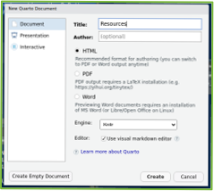
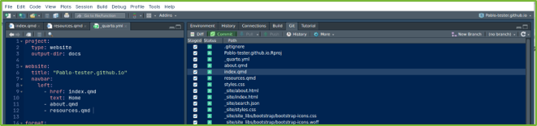

Create Quarto website using RStudio and GitHub
Pablo Leon-Rodenas| NHSE-PMDD |NHS-R/NHS.pycom Conference 2023
October 10, 2023
Objective
This is a tutorial about creating your personal website using Quarto in RStudio (from Posit) and to publish it to GitHub. The website will include a section about R and Python online resources
Pre-requisites
GitHub Account: You must have a GitHub account or create a new one to host your website.
RStudio: We will push all our code to GitHub using Rstudio (you can use its built in terminal to do it so)
Git and GitHub: We will use Git integrated within Rstudio to publish the different website files (index.html, about.html, etc) to GitHub. You can also upload files directly to GitHub website repo.
Presentation structure
Step 01: Create a new
GitHub AccountStep 02: Create a
new repositoryto host your website on GitHubStep 03: Create
new folderin your local machine to build your websiteStep 04: Create new
RStudio projectStep 05: Create
Quarto website documentStep 06:
Criticalstep. Changeoutputdirectory to anew "docs" folder
Presentation structure
Step 07: Populate
Index filewith content and click on"Render"Step 08: Create new
quarto fileto populate thenew "resources" tabin our websiteStep 09: Go to the
_quarto.ymland add thenew sectionbelow the about.qmd lineStep 10: Go to
"Pages"left menu on the"Setting"main top menu on our Pablo-tester new repoStep 11:
Pushall your websitefilestoGitHubdedicated repo usingRStudioStep 12: Check all GitHub
websitesectionscontent isaccessiblefrom your browser using website URL
01.Create GitHub Account
For this workshop, I am going to use my GitHub account https://github.com/Pablo-tester. My main GitHub account already includes a personal website: https://github.com/Pablo-source/Pablo-source.github.io
03.Local Quarto website folder
Previously created local folder named “Build_new_website”
Create new R project
Containing new Quarto Website project.
05.Create Quarto website
We setup the Quarto website using the repository name we created at the start “Pablo-tester.github.io”. This is required for the website to be rendered in GitHub.
Our Quarto website will create a new project folder as a sub-directory of our main folder:~/Documents/Pablo_zorin/Pablo_tester/Build_new_website
Tick check box: Create a git repository
Tick check box: Open in a new session
05.Set of Quarto website files
Click on “Create Project” to open the Quarto Website project. Website files included inside new folder “Pablo-tester.github.io”
It that will be populated with the following Quarto related files: - quarto.yml
.gitignore
about.qmd
index.qmd
styles.css
Pablo-tester.github.Rproj
06. Add docs folder to yaml file
When rendering a Quarto documents, quarto saves the rendered website to output directory by default.
To host your Quarto website using GitHub pages, change this setup to point to a new docs folder.
Change output directory to a new docs folder
07. Populate Index file with content
Open the Index.qmd file, populate it with content and click on Render. Include content about the general purpose of this website.
This action will create a new docs folder on your Files pane. Now our Quarto website is ready to be pushed to GitHub, so it would be rendered using GitHub Pages.
08. Fill Resources content
Create new quarto file to populate resources tab in our website
In Rstudio click File > New File > Quarto document. Name this new Quarto file Resources

09. Add new section to quarto.yml file
Modify _quarto.yml file content to include new quarto file resources.qmd as a new website section.
Click on save to keep the changes introduced to this _quarto.yml file.
The HTML output file from resources tab is saved in the /docs folder.
10. Set branch to docs folder
From setting menu search for Pages left side menu. In this Pages left menu, under branch section: Instead of /root folder, navigate and select /docs folder instead. And then save changes applied
11. In RStudio push website to GitHub
From RStudio, push all your website files to the GitHub to update your website content.

12. Check GitHub website
Now our website is up and running, Access it from GitHub website URL
https://pablo-tester.github.io/
13. Resources/Further topics
Tutorial for Creating a new RStudio project with GitHub to visualize climate change (CC213). Riffomonas Project https://www.youtube.com/watch?v=d5dUkO5lXds&list=PLmNrK_nkqBpLdTEOj\_-bwp58490i8ezRI&index=9
Repository “climate_viz” on my main GitHub account: https://github.com/Pablo-source/climate_viz
Repository using Git and the terminal to commit changes to GitHub: https://github.com/Pablo-tester/housing_pipelines
Further topics
Settings: (Manage Pipeline to deploy website):“Re-run all jobs” to ensure Quarto website is rendered
Setup SSH security setting to clone repo and apply changes using Git and the Terminal instead of Rstudio:
Create a public/private RSA key pair to use SSH instead of URL to commit changes to GitHub
Any questions?
Pablo Leon-Rodenas
email: pablo.leonrodenas@nhs.net
My GitHub Repo: https://github.com/Pablo-sourceSlides: https://pablo-source.github.io/NHS_R_Pycom_2023.html#/title-slideQuarto slides R script: https://github.com/Pablo-source/Pablo-source.github.io/blob/main/NHS_R_Pycom_2023.qmdTHANKS !!